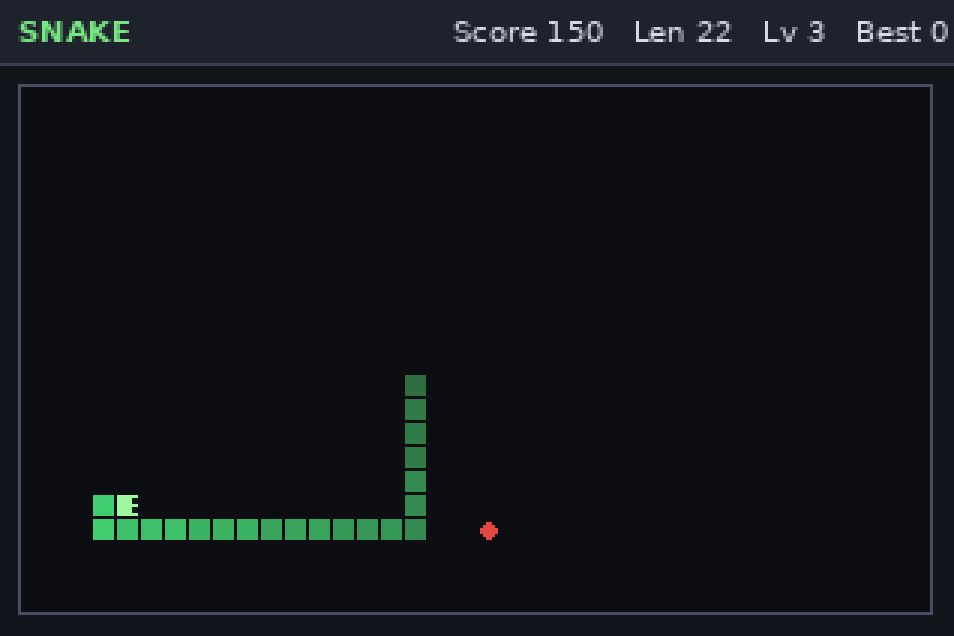
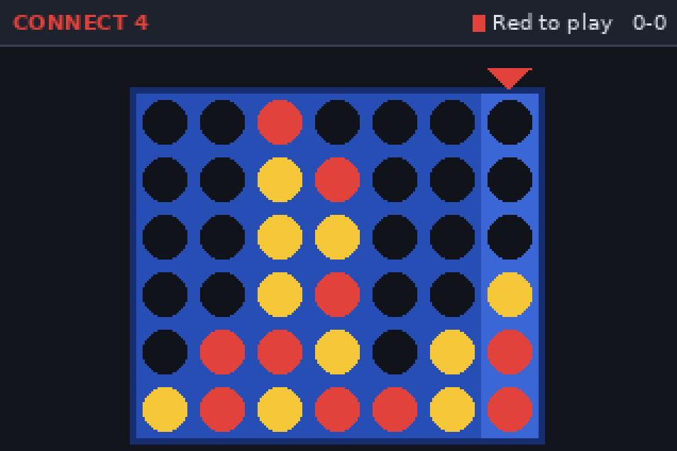
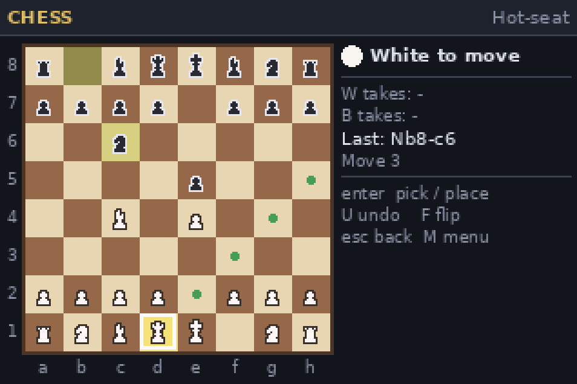
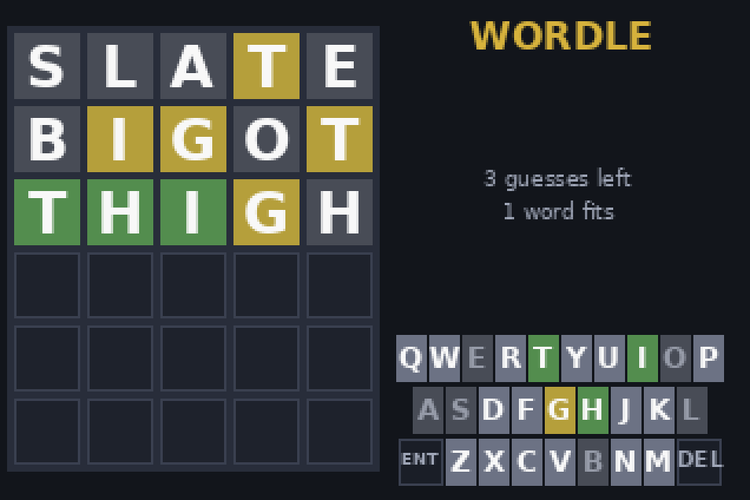
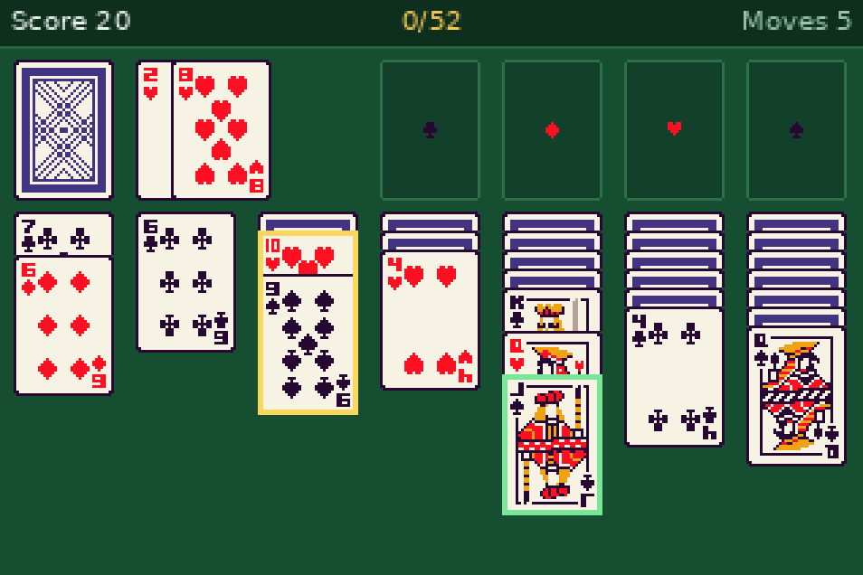
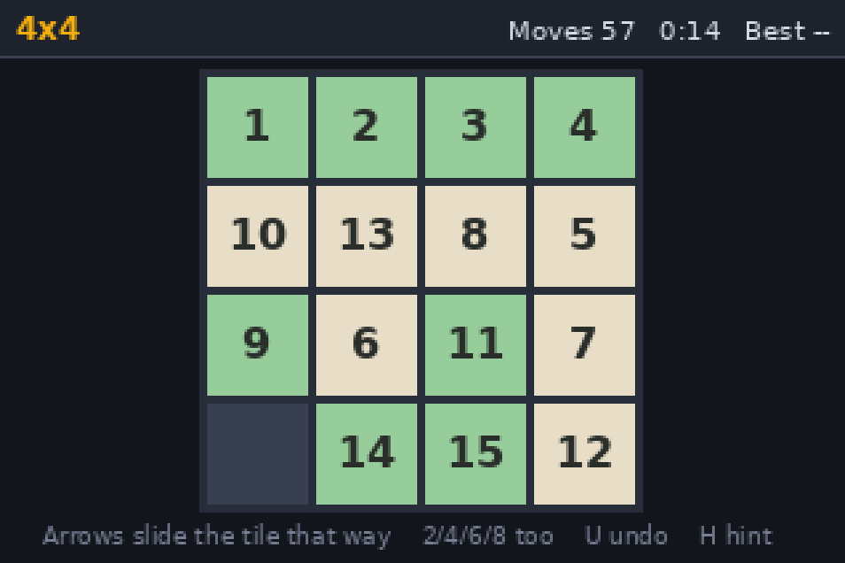
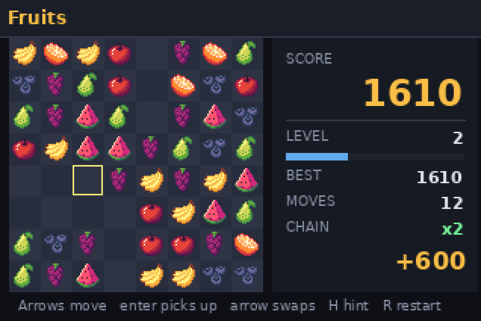
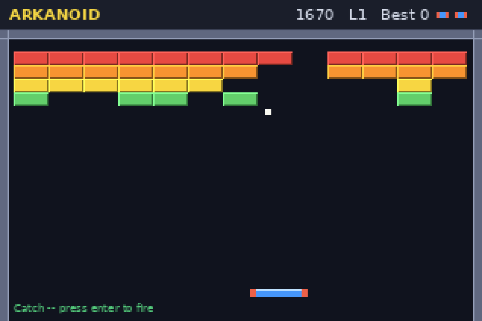

ti-nspire games
ten games for the ti-nspire cx ii, written in ti-nspire lua. they
install by drag-and-drop — no ndless, no jailbreak, no root. each
.tns is an ordinary ti-nspire document that happens to
contain a lua script, so the calculator runs it in its built-in sandbox
exactly like a ti-authored one.
every game is played with the arrow keys, enter and esc; esc or p pauses and r restarts. the touchpad works everywhere too.
the games
-

snake
apples are worth 10 × level, every 4 apples speeds you up to a cap at level 10, and following your own tail is legal. m toggles solid walls and wrap-around between rounds.
-

flappy bird
one tap per gap. the flap sets the bird's speed rather than adding to it, so panicking out of a dive works, and every gap is generated to be reachable from the one before it.
-

2048
slide the whole board with the arrows; equal tiles that collide merge. a move that changes nothing costs nothing, and u undoes — including the move that ended the game.
-

connect four
two players on one calculator, or one against a bot with four difficulties. 1–7 drops straight into a column, and who opens alternates between rounds.
-

chess
full legal chess — castling, en passant, promotion, the fifty-move rule, threefold repetition — against a bot with three difficulties, or hot-seat. picking a piece up marks every square it may go to.
-

wordle
six goes at a five-letter word, typed on the calculator's own keyboard and checked against a 13,732-word dictionary baked into the document. h on the title screen turns on hard mode.
-

klondike
draw one or draw three, unlimited or three stock passes, optional autoplay. every pile a card can legally go to is highlighted, which on a 318-pixel screen is the difference between playing and guessing.
-

slide
the 15-puzzle, at 3×3, 4×4 or 5×5. tiles already in their final place are drawn green, h plays one move toward a solution, and every puzzle it deals is guaranteed solvable.
-

fruits
match three: swap two neighbouring fruit to line up three or more, and whatever falls in may line up again. longer matches leave special fruit behind, and cascades multiply the score up to ×12.
-

arkanoid
break the wall. where the ball lands on the paddle sets the angle it leaves at, so the red rims are full deflection. broken bricks drop capsules — laser, catch, slow, three balls at once. eight hand-drawn levels, then generated ones for as long as you last.
installing
- connect the calculator over usb. on a mac the easiest route is ti-nspire cx ii connect — free, web-based, nothing to install, but it needs chrome; safari has no webusb and fails in a way that looks like a hardware fault. the student or teacher software works too.
-
drag the
.tnsfiles into the calculator's file list. they have to land in my documents directly, not a subfolder. - on the handheld, open my documents, pick one, and press enter.
needs os 3.0.2 or newer, which every cx ii ships with. there is nothing else to install. the source, the build instructions and a long write-up of how each game works are on github.
credits
the playing cards are kin pixel playing cards by kin. the chess pieces are pixel chess by brosen. wordle's accepted-guess list is scowl, copyright 2000–2011 kevin atkinson, filtered to five letters. everything else is original.